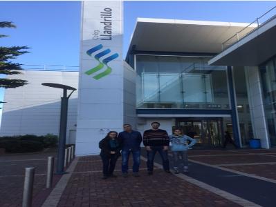

Visita a Llandrillo
04-10-2016
4 profesores/as de Zubiri-Manteo han visitado el Llandrillo College de Wales gracias al proyecto Erasmus+. Durante la estancia hemos estudiado las diferentes metodologías que utilizan, formas de trabajo y otros. Además, hemos formalizado relaciones de cooperación para futuros proyectos
Recepción a centros

03-10-2016
El pasado 22 de septiembre tuvo lugar en el Ayuntamiento de Donostia la recepción por parte del Concejal de Juventud, Martín Ibabe, de casi una treintena de alumnos/as del intercambio promovido por Zubiri Manteo, provenientes de los siguientes centros escolares: II Liceum Ogólnoksztalcace-Gdansk (Polonia), Rheien-Maas-Berufskolleg de Kempen (Alemania) y del propio Zubiri Manteo.